WHY CHILE?
Chile is a land of adventure and wonder, a country that stretches across breathtaking extremes. In the north, the Atacama Desert dazzles with surreal landscapes, salt flats, and star-filled skies. In the center, vibrant Santiago and colorful Valparaíso pulse with culture, art, and history, while nearby valleys invite you to taste world-renowned wines. To the south, Patagonia offers glaciers, fjords, and the iconic peaks of Torres del Paine — a paradise for hikers and nature lovers. Along the Pacific coast, pristine beaches and charming fishing villages provide relaxation and authentic local flavor. From desert to mountains, vineyards to glaciers, Chile is a destination that promises unforgettable experiences at every turn.
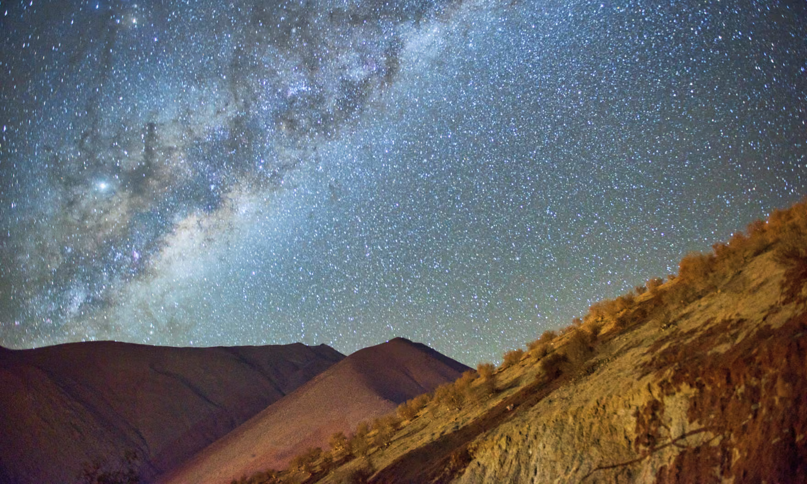
Elqui Valley
Coquimbo | The world’s first International Dark Sky Sanctuary
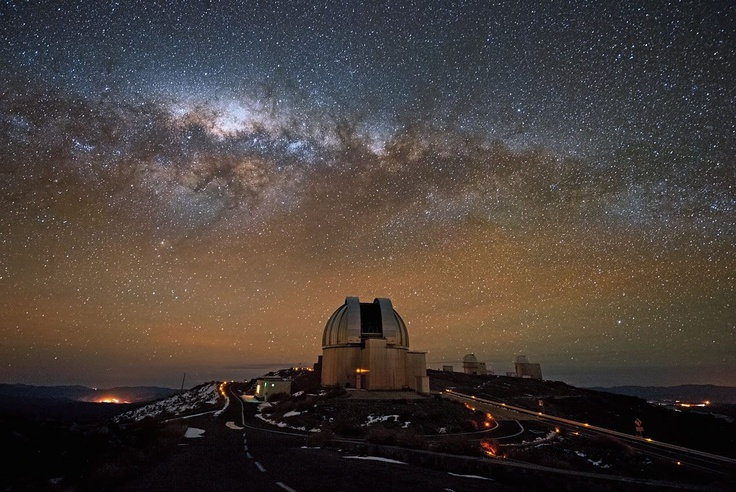
San Pedro de Atacama
Valle de la Luna | Breathtaking landscapes and salt mountain ranges.

Torres del Paine National Park
Patagonia | One of the most famous hiking routes on the planet.
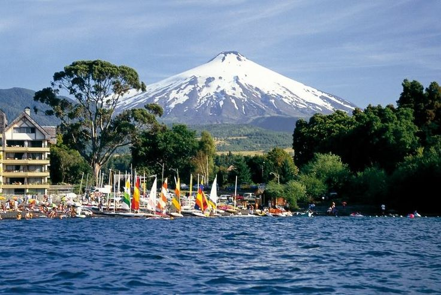
Pucón
The Lake District | The world’s premier destination for active volcano climbing.

Futaleufú River
Northern Patagonia | Home to the most challenging Class V white-water rapids on Earth.
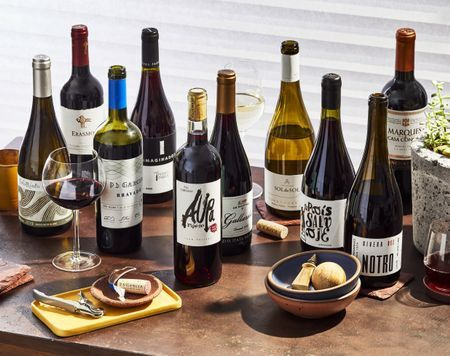
Chilean Wine
Maipo Valley | The heart of Chilean cowboy tradition and world-class Carmenère.
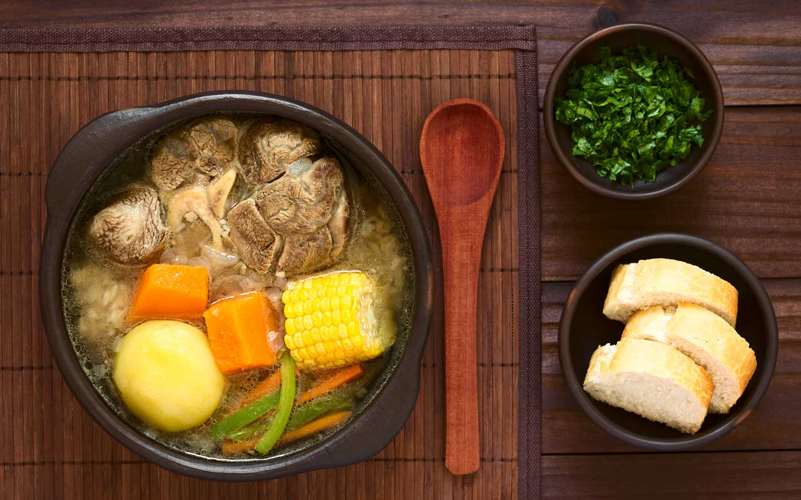
Cazuela de Vacuno
Santiago | Hearty beef stew simmered with potatoes, pumpkin, corn, and fresh vegetables.
Chilean Empanada
Santiago | Savory pastry filled with beef, onions, olives, and egg.
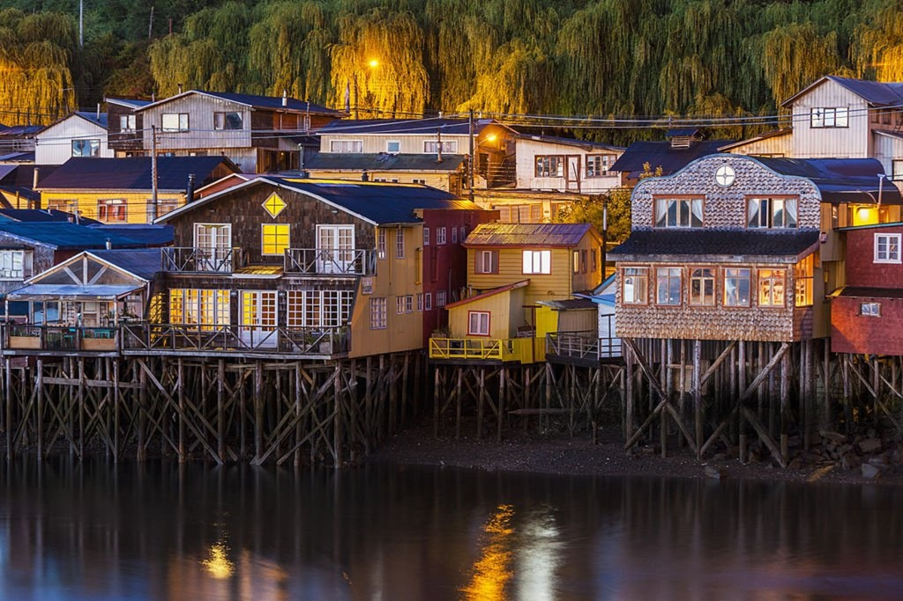
Chiloé Island
Southern Chile | A large island with famous wooden churches and houses on the water.
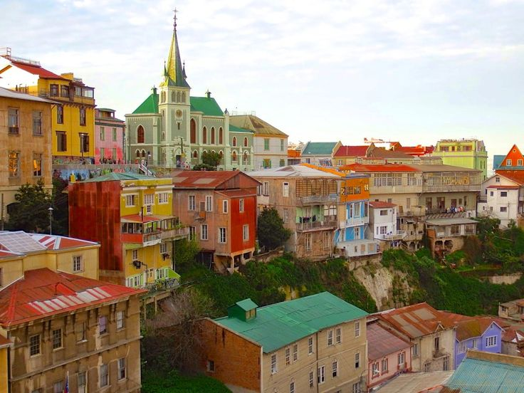
Valparaíso
Valparaíso Coast | A colorful city by the ocean with houses on steep hills.
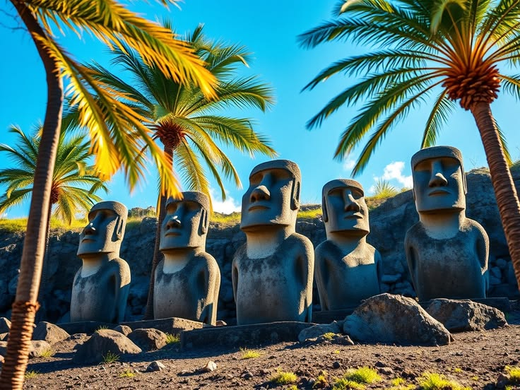
Rapa Nui
Polynesia | A famous island with giant stone statues called Moai.
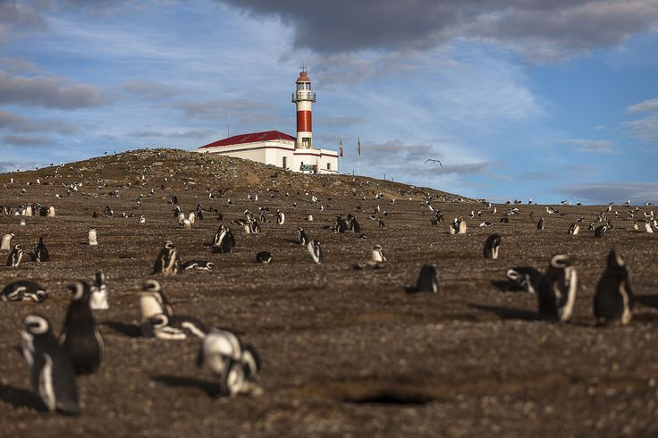
Magdalena Island
Strait of Magellan | A small island that is home to thousands of friendly penguins.
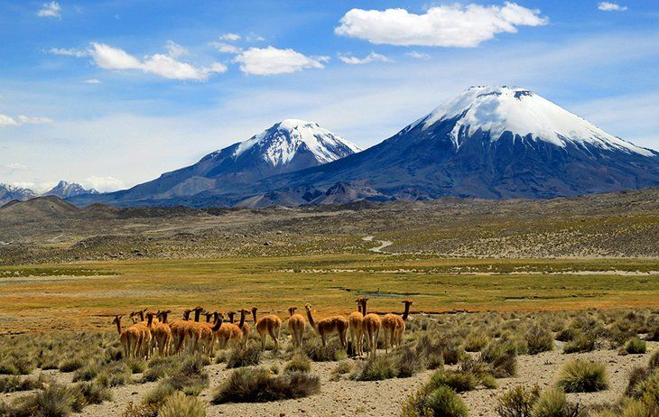
Lauca National Park
High Andes | A beautiful park with high mountains, blue lakes, and volcanoes."

Los Dedos Paleontological Park
Caldera | An outdoor park where you can see real giant fossils of ancient animals.
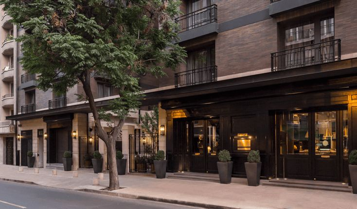
Barrio Lastarria
Santiago City | Historical neighborhoods with beautiful old buildings, art, and cafes.
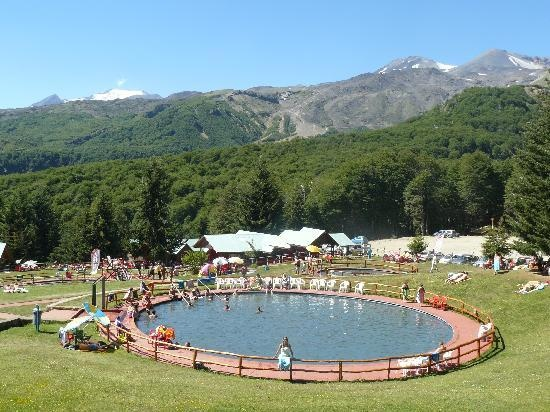
Termas de Chillán
Central Mountains | A famous place with hot springs and snow for skiing.
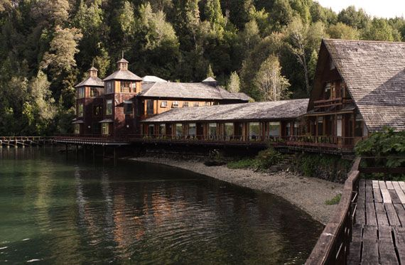
Termas de Puyuhuapi
Southern Patagonia | Relaxing hot springs located in a rainy forest next to the ocean.

The Atacama Desert
Moon Valley (Valle de la Luna) | A desert place that looks like the moon with sand and stone.
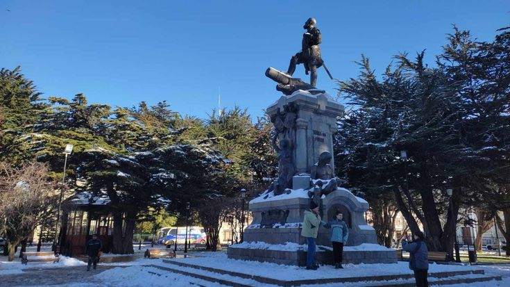
Punta Arenas
Southern Chile | A cold, windy city at the bottom of South America.
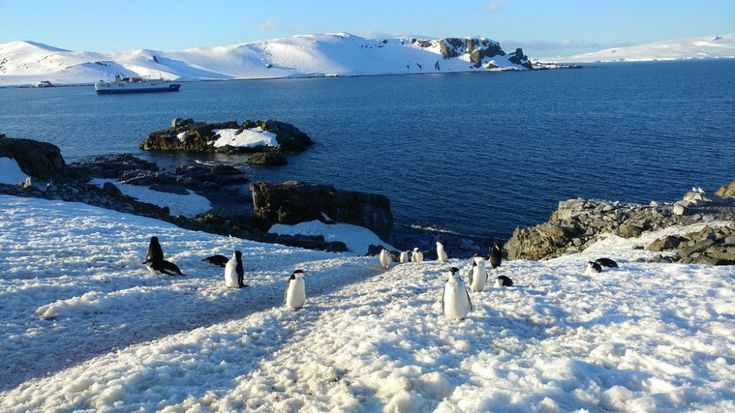
King George Island
Antarctica | A snowy place with ice and penguins at the bottom of the world.
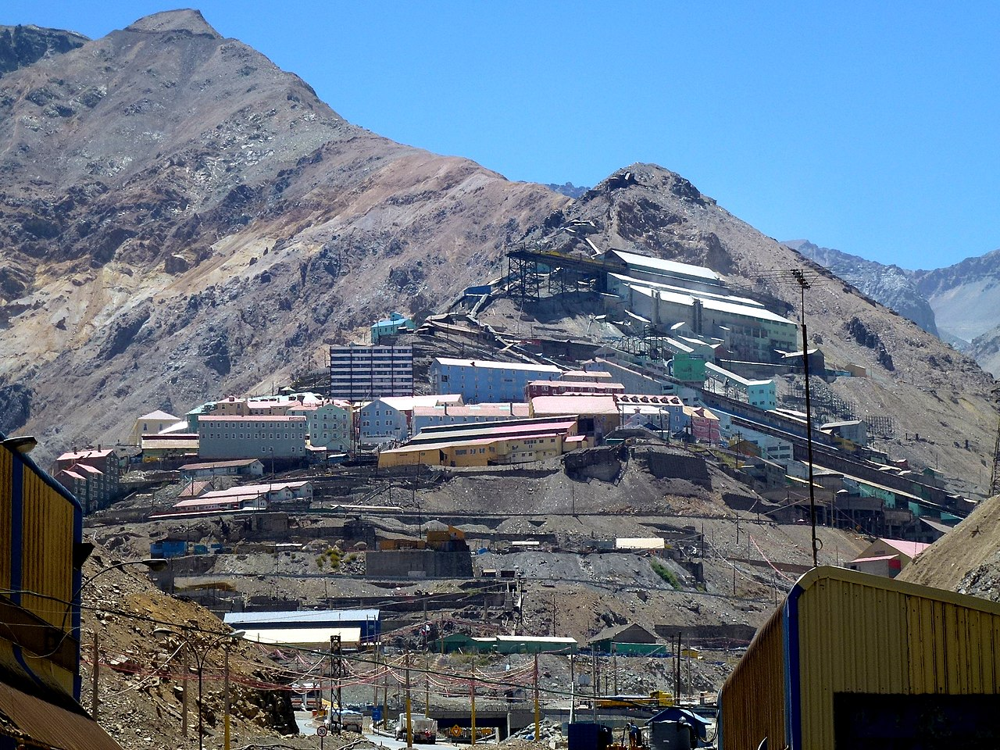
Sewell Mining Town
Central Andes Mountains | An old, colorful town built on a mountain for copper miners.
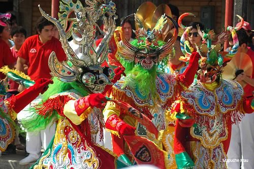
La Tirana Festival
Northern Chile | A July religious celebration with colorful dances and costumes.
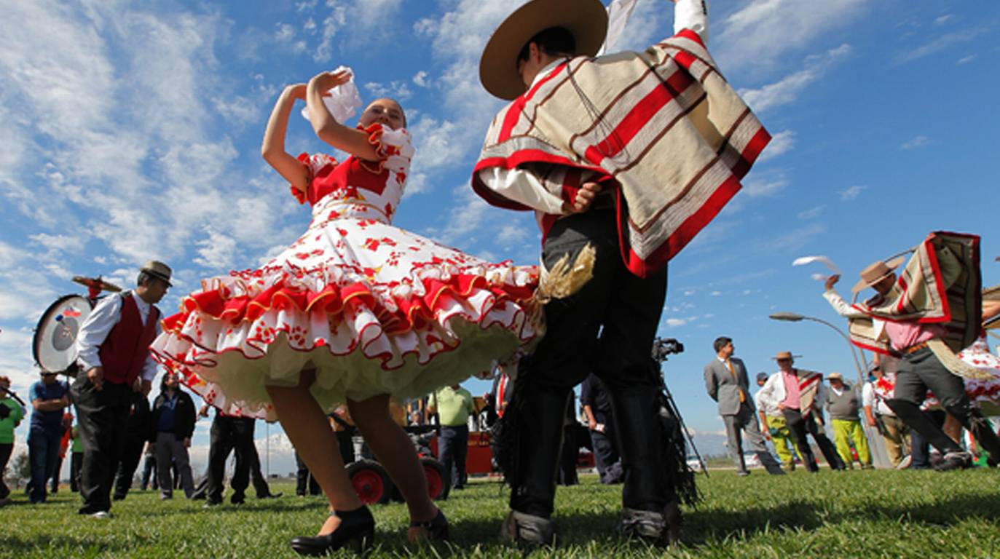
Fiestas Patrias
Chile | September festivities honoring independence with parades, cueca dancing, and traditional food.
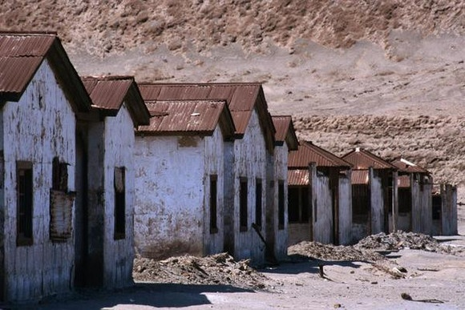
Humberstone
Atacama Desert (Northern Chile) | An old, empty "ghost town" where people used to mine salt.